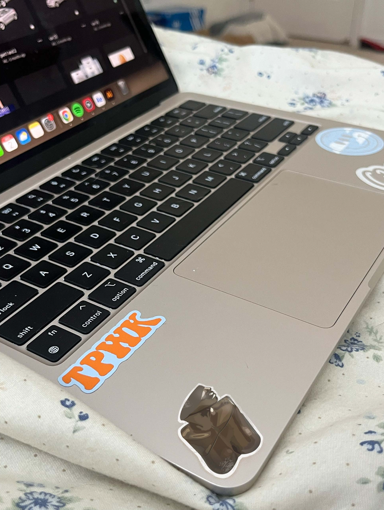
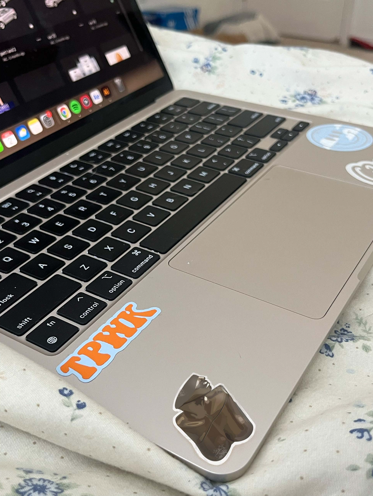

Still Life Vector Project
 

Project Description:
For this Art 74 assignment, It was required to create an Adobe Illustrator vector drawing out of any still life object. I chose a perfume bottle in my own room that I use frequently, so this was an item that I correlate myself personally with. I used the Illustrator pen tool to create many small vector points in order to produce the rough edges and achieve the effect of realism. I was then instructed to convert the vector drawing into a sticker cutout, and use Adobe Photoshop to make it appear like a real sticker. I experimented around with Photoshop tools until I was satisfied with my end result, and it seemed to look like a realistic sticker on my own computer.